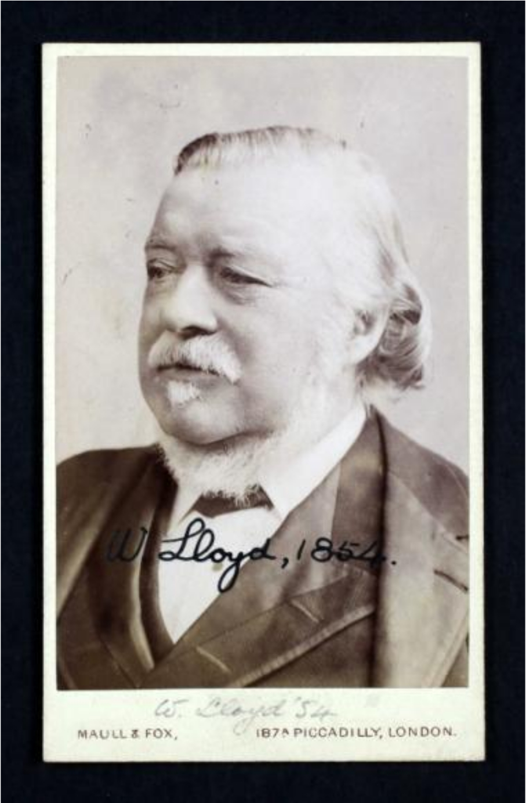
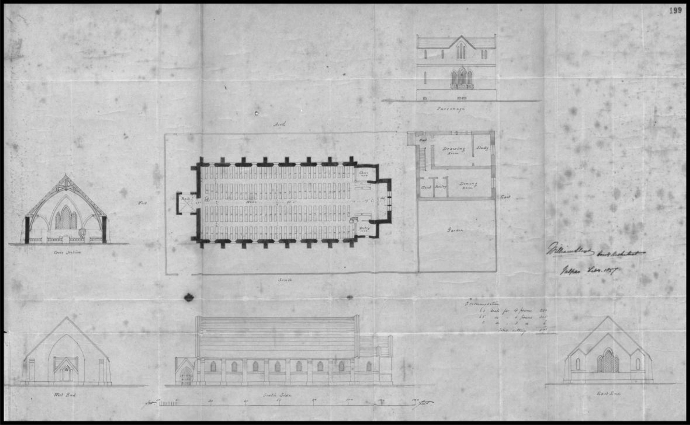
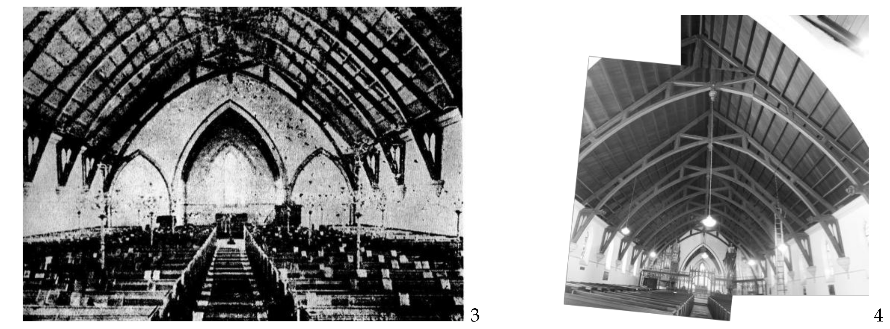

Valparaíso was named World Heritage site by the Unesco for being an example of early modernization
and globalization in America. William Henry Lloyd, English engineer who worked in Chile during the
1850s and 1860s, is a highlight in the transference of engineering knowledge and constructive
techniques which represented the materialization of the ideal of progress during the 19th Century,
especially in railways. Nevertheless, his main architectural work in Valparaíso is Saint Paul´s Anglican
Church (Historical Monument), a fair testimony of the English Neogothic Style adapted to the Chilean
context. Being the Victorian Neogothic Style linked to the Arts and Crafts Movement, which was
inspired by medieval models and the recovering of ancient productive techniques, it was initially
established as a reaction against modernity. This paper aims to deal with the apparent contradiction or
dichotomy between modernity and tradition, trying to understand it exploring and showing the
valuable legacy, mainly in Valparaiso, of one of the greatest railway engineers in America.
Keywords: Valparaiso, Neogothic Style, William H. Lloyd
Introducción. William Henry Lloyd, un ingeniero de la diáspora
Valparaíso fue nombrado patrimonio de la Humanidad por la Unesco por ser un
ejemplo de la temprana modernización y globalización en América. William Henry
Lloyd, ingeniero inglés que trabajó en Chile durante las décadas de 1850 y 1860,
constituye un hito en la transferencia de conocimientos de ingeniería aplicada y
técnicas constructivas que representaron la materialización del ideal de progreso
decimonónico en la proyección de variadas obras públicas, especialmente de
ferrocarriles. No obstante, su principal obra arquitectónica en Valparaíso es la Iglesia
Anglicana Saint Paul´s (Monumento Histórico), un claro testimonio de arquitectura
neogótica adaptada al contexto chileno. Siendo el neogótico victoriano un estilo ligado
al movimiento británico Arts and Crafts, que se inspira en modelos medievales y en la
recuperación de técnicas antiguas de producción, éste se planteó inicialmente como
una reacción a la modernidad. Este artículo pretende abordar esta aparente
contradicción o dicotomía entre modernidad y tradición, explorando y poniendo en
valor el legado de uno de los grandes ingenieros ferroviarios ingleses en América,
principalmente en el puerto de Valparaíso.
Al inicio de su libro de memorias
A Railway Pioneer. Notes by a Civil Engineer in
Europe and America from 1838 to 1888
,
el ingeniero británico
William Henry Lloyd
(12 de Octubre de 1822 – 15 de Julio de 1905) afirma que la intención de su libro es dar cuenta
de lo que fueron sus viajes por los océanos Atlántico y Pacífico –recorriendo más de
130.000 millas, equivalentes a dar la vuelta al globo terráqueo unas cinco veces-, para
que sus experiencias pioneras en la ingeniería ferroviaria en Francia, Suecia, Italia,
Chile, Perú, Argentina, Brasil, Guatemala, México, Estados Unidos, Canadá y la Indias
Occidentales sirvan de entretención y acaso instrucción a los lectores (Lloyd, 1900). Su
testimonio es invaluable, y sin duda representa un caso ejemplar de trasmisión de
ideas y conocimientos técnicos y estéticos entre Europa y América a través de su
trabajo como ingeniero, arquitecto y consultor de empresas vinculadas a obras civiles.
A la vez, su obra material e intelectual tuvo gran repercusión en las comunidades
donde se llevó a cabo, favoreciendo la conectividad, el intercambio y la
retroalimentación profesional y técnica, y la transmisión cultural entre países y
continentes en una época de temprana globalización.

Fig.1 William Lloyd (Londres,1854). Gentileza de su bisnieta, June Fouracre
Carolyn Dougherty, en su artículo “
The Fall and Rise of the British Railway
Industry, 1847-1900”,
desarrolla tres ideas a partir de lo que R. A. Buchanan llamó la
‘diáspora de la ingeniería británica’ (Buchanan, 1986): cómo se llegaron a construir
ferrocarriles alrededor del mundo, el hecho de que éstos fueron construidos por
ingenieros británicos, y la interacción que hubo entre los ingenieros británicos y las
culturas foráneas. Doughery analiza la labor de varios ingenieros británicos en
distintos lugares de Asia, África y América, concluyendo ciertos patrones comunes en
sus carreras: los ingenieros jóvenes que estudiaron y fueron entrenados como
aprendices en Gran Bretaña, generalmente salieron al extranjero a ocupar puestos de
trabajo tras ser recomendados por ingenieros más antiguos que asistían a nuevos
proyectos como consultores, basándose en los antecedentes que habían obtenido de
trabajos previos (Dougherty, 2007, 5). Además, debemos tener en cuenta que la
mayoría de los ingenieros británicos que trabajaban en el extranjero eran miembros de
la Institution of Civil Engineers –como fue el caso de William Lloyd- y habitualmente
presentaban los resultados de sus proyectos favoreciendo el intercambio de
experiencias y conocimientos con la comunidad mundial, lo que los mantenía al día
con las mejores prácticas de Gran Bretaña. Según esta autora, la presencia de
ingenieros británicos alrededor del mundo tuvo múltiples efectos en los países en
donde trabajaron. Aunque no existían lazos formales entre los bancos londinenses y el
gobierno británico, sus directores provenían de un contexto común, y mantenían
vínculos personales y de negocios; la inversión tendía estar en congruencia con la
política exterior.
Como veremos, William Lloyd dejó un importante legado en Valparaíso, Chile,
durante el siglo XIX, que permanece vigente hasta hoy. Es importante considerar que
este puerto contaba con una importante cantidad de ciudadanos británicos y
norteamericanos a mediados del siglo XIX, que habían sido atraídos por la temprana
independencia de Chile y su naciente libre comercio, por las oportunidades que
brindaba el desarrollo comercial orientado a la cuenca del Pacífico y por la estabilidad
política del país. Estos factores hicieron que tempranamente, en 1823, llegara a esta
ciudad el primer representante consular de SMB, J.R. Nugent, con el objetivo de
reconocer oficialmente la Independencia de Chile tras verificar que se dieran las
garantías necesarias a los súbditos británicos, lo que sucedió de hecho en 1825 (Prain,
2007). Los ciudadanos británicos instalados en este puerto durante la primera mitad
del siglo XIX actuaron como agentes modernizadores, a través de su influencia
económica y cultural.
En este contexto, el perfil de William H. Lloyd se adaptaba perfectamente a la
caracterización de ingeniero de la diáspora anteriormente descrito. Luego de ser pupilo
de Joseph Gibbs por tres años, éste lo envió a investigar un ferrocarril a Francia, donde
permaneció por dos años como ingeniero constructor residente para Gran Ferrocarril
del Norte de Francia. En 1848 Lloyd se unió a Robert Stephenson & Co., y pasó
algunos años trabajando Ceilán y en Suecia, antes de emprender viaje a Chile
contratado por el gobierno local tras ser recomendado por Stephens. Por su parte, el 7
de marzo de 1854, Lloyd fue elegido miembro de la Institución de Ingenieros Civiles de
Inglaterra, un temprano y merecido reconocimiento.
La década que él pasó en Chile y Perú fue muy fecunda, siendo espacialmente
significativo su aporte a la ciudad de Valparaíso, particularmente a través de las obras
del ferrocarril a Santiago. Pero además Lloyd destacó en la vida de la comunidad local
como activo agente de modernización, transfiriendo y aplicando sus conocimientos.
Por ejemplo, el 14 de Octubre de 1856 se llevó a cabo una reunión de la comunidad de
habla inglesa con el objeto de organizar ‘The Valparaíso Literary and Scientific Society’.
Se conformó un comité y W. Lloyd resultó elegido presidente. En sesión del 9 de
diciembre, él presentó un tema de interés vital: ‘The Means of Water Supply to
Valparaíso” (Hillmann, 411). Lloyd mantuvo esta inquietud por muchos años;
finalmente, en 1881, como Director de la Compañía de Desagües y Aguas de
Valparaíso (Valparaiso Drainage Company), logró completar dichos trabajos en la ciudad. Durante su vida fue consultor para variadas obras civiles, y colaboró de cerca
con importantes empresarios que vieron en las obras públicas posibilidades de
bienestar y progreso, de acuerdo al ideario de la modernidad. Aparte de su trabajo en
el ferrocarril de Valparaíso a Santiago, en la década de 1850 y 1860 Lloyd diseñó y
construyó la Iglesia Anglicana Saint Paul en estilo neogótico (1858) y terminó el
tendido de rieles de la Compañía de Ferrocarril Urbano de Valparaíso (1863).
Una vez concluido el ferrocarril, en 1864, la Institución de Ingenieros Civiles lo
premió en Londres con la Medalla Telford, reconociendo su trabajo y su aporte a la
ciencia. Tras completar sus proyectos en Chile, Lloyd aceptó otros desafíos en
Latinoamericana antes de jubilar y regresar a Inglaterra. (Institute of Civil Engineers,
76. 41 0).
William H. Lloyd y el Ferrocarril de Valparaíso a Santiago
Chile recibió tempranamente a los ingenieros de la diáspora antes mencionada. En
1851 se construyó la primera línea férrea del país, desde la ciudad minera de Copiapó
hasta el puerto de Caldera; en Sudamérica sólo la antecedió la línea de Demarara, en la
Guayana Británica (1848). En 1852 se inició la construcción del ferrocarril que prometía
unir velozmente el puerto de Valparaíso y Santiago, la capital, antes sólo conectados
por el antiguo camino de coches y carretas. No obstante, la finalización de este
proyecto tardó más de lo esperado:
The distance in a straight line was not more than 55 miles, but the mountains near the ocean
rose to considerable heights and the track had to be curved; this and other delays, some of
them due to revolutionary uprising, prevented completion of the through ValparaísoSantiago
railway until 1863.” (Holland, 1927, 272-273)
Tal como el ferrocarril de Caldera a Copiapó, el ferrocarril de Valparaíso a Santiago
también surgió por iniciativa de uno de los más visionarios marinos, empresarios y
gestores de obras civiles de Chile, de seguro uno de los principales gestores de la
temprana modernización y globalización de Valparaíso: William Wheelwright
(Merrimac, Massachussets, Estados Unidos, 1798 – Londres, Inglaterra, 1873). En la
década de 1830 comenzó su tarea de establecer una línea de vapores entre las nacientes
repúblicas de Chile y Perú y el istmo de Panamá como punto de conexión con Europa.
Fundó en Inglaterra en 1838 la naviera Pacific Steam Navigation Company, que
empezó a operar en 1840 entre Valparaíso y Callao con los vapores
Chile y
Perú. A la
vez, se preocupó de mejorar diversas construcciones portuarias y faros en las costas, a
fin de proteger la navegación y el comercio marítimo. Una década después,
observando las experiencias de otros países, vislumbró la relevancia de establecer
ferrocarriles entre el litoral y el interior de Chile para facilitar las comunicaciones y la
extracción mineral. Wheelwright fue un hombre de su tiempo, que supo trabajar con
emprendimientos particulares y con el gobierno de Chile. “Ever since its inception, the
invention and growth of the British railway system had been carefully observed by
other countries. While merchants and entrepreneurs in some of these countries, and
governments in others, were interested in developing railways of their own, for the most part only Britain could provide the expertise, but more importantly the capital, to
construct railways. With British capital, however, came British control and British
engineers, who exerted influence on local cultures and were to some extent influenced
in return” (Dougherty, 11).
Así lo comprueba la obra testimonial de un contemporáneo, Charles Hillmann:
I am not positive if I told you that, as early as 1846, Wheelwright had surveys made on a
route between Valparaiso and Santiago; it followed shore and cliff to Concon, was surveyed
by engineers Barton and Carter, was the one Campbell proposed build on, and, when it was
abandoned, later, it was known, in the discussions which arose, as ‘the Concon route’. We
have seen how Wheelwright urged on Government the wisdom of the enterprise and how
impracticable his scheme was held by the ruling powers, as well as by the Chilean people.
However, his action undoubtedly paved the way for the future, by calling attention to what
was being effected in other parts of the world; consequently, in November of 1850, a law
was passed placing at Wheelwright´s disposal a monthly amount of $2,000, for studying the
best route, making estimate of cost, etc. The year previous, 1849, had witnessed the
completion of the railway between Caldera and Copiapó and the chief engineer of that
work, with at least part of his staff, was free to take in hand the surveys between Valparaíso
and Santiago; this he died in 1850, completing the same about the middle of 1851”.
(Hillmann, 1901, 294-295)
Luego de que el bien reputado ingeniero Campbell dejara su cargo por
desavenencias con el gobierno, fue sucedido por uno de sus asistentes, Mr. Robertson,
quien murió trabajando en la Cuesta Chacabuco. A su vez, a él lo reemplazó otro
ingeniero, George Maughan, quien falleció en 1853. Luego vinieron otros ingenieros:
George Paddison, W.C. Buchanan y George Barclay. Tras los mencionados decesos, y
dado los retrasos y las graves pérdidas ocurridas, llegó a Chile William Lloyd,
contratado por el gobierno a hacerse cargo del ferrocarril de Valparaíso a Santiago.
Lloyd abandonó definitivamente el trazado de la ruta por la arenosa y escarpada zona
de Concón, y en su lugar lo hizo pasar por la que sería en el futuro la ciudad de Viña
del Mar hasta llegar a Limache, vía Paso Hondo.
En 1855 se inauguró el primer tramo del aventurado ferrocarril Valparaíso-Santiago:
Los seis kilómetros, que existen desde la estación de Barón [en Valparaíso] a Viña del Mar,
costaron cerca de un millón y medio de pesos y se emplearon tres años de trabajos, hasta su
inauguración, el 17 de septiembre de 1855” (Vicuña Mackenna, 1931, 13). Curvas, túneles,
cortes de cerros […] todos fueron enormes desafíos para la ciencia y la técnica de la época.
Como rememora Lukas, el socavón de Punta Gruesa fue el primero de los cinco túneles que
tendría la línea hasta Santiago y el primer túnel de vía de comunicación que se construyó en
el país. Tenía unos 160 metros de longitud y fue labrado a dinamita. En el frontal que miraba
hacia Valparaíso tenía una inscripción que decía: “Gobernando la República el Excmo. Señor
Presidente Don Manuel Montt. Septiembre -1855. Perseverencia omnia vincit. William
Lloyd, Ingeniero”. En el frontal de salida, en tanto, continuaba con tres nombres de mineros
chilenos: “Albañil, José Leiva. Cantero, Lino Barrientos. Estibador, José Vargas”
(Pecchennino, 1974).
Por eso se entiende la magnitud y pompa de la fiesta inaugural y que el viaje
inaugural se convirtiera en un paseo recurrente e imperdible: “[…] en medio de la fiesta flamearan banderas de América y Europa, y que la estrella de Chile luciera en
arcos sobre la línea férrea. En la estación había lienzos que sintetizaban muy bien el
espíritu de la época, diciendo:
La unión es fuerza. La ciencia extranjera combinada con el
capital industrial nacional -en el lado derecho, y esta otra en el lado izquierdo-: Perseverencia
omnia vincit. Loor al esclarecido esfuerzo de S.E. el Presidente de la República y de los señores
de la empresa.” (Vicuña Mackenna, 17).
“Maughan was succeeded by William Lloyd, sent from England for the purpose
and remaining in charge until after the completion to Santiago. […]” (Hillman, 297).
Sin embargo, la desafiante geografía pondría a prueba el ingenio y la técnica. En
diciembre de 1856, el tráfico ferroviario fue habilitado hasta Limache; en junio de 1857
llegaba a Quillota, y en febrero de 1861 arribaba a Calera. Pero dadas las dificultades y
especialmente los problemas causados por la construcción el Túnel San Pedro, y ya que
el gobierno del Presidente Manuel Montt (1851-1861) tenía un especial compromiso con
esta obra, se firmó una ley que lo autorizaba a establecer un contrato con el ingeniero
estadounidense Henry Meiggs (quien estaba trabajando en el Ferrocarril al Sur) para
finalizar la etapa del trazado de Quillota a Santiago. Finalmente, el 15 de septiembre de
1863 se abrió la línea completa de este aventurado ferrocarril de Santiago a Valparaíso.
Hoy Henry Meiggs es recordado como el ingeniero del ferrocarril de Santiago a
Valparaíso; no obstante, William Lloyd, Campbell, los otros ingenieros y los empleados
que participaron en esta obra no deben quedar en el olvido.
Como dan cuenta los documentos y testimonios de la época, no sólo los ingenieros,
sino también la mano de obra extranjera, fue esencial en la construcción de los
primeros ferrocarriles chilenos, y jugaron un factor clave en la transferencia de
conocimientos a los empleados chilenos. En relación al ferrocarril Valparaíso–Santiago:
[…] There were representatives of many nationalities, no attention being given to a man´s
origin, though Britons and Americans predominated very largely. According to the list
given by Vicuña Mackenna, there were 100 of said two nationalities to 39 of others, not
including Chileans, of whom there were many. Said authority gives 8 Italians, 9 Frenchmen,
32 Germans, 38 Englishmen and 62 Americans. Many of the more intelligent artisans -
masons, carpenters, blacksmiths, etc.,- were placed in charge of general work distinct from
their specialties, they being selected after their capacities became known.” (303). […] “The
first head carpenter of the Valparaíso shops was Thomas Munday, an American. The first
head painter was Richard Sparrow, British. J. Beaver was, at one time, head boiler-maker
and Alex. Aitken shop foreman. Almost all the early mechanics were Britons who had been
contracted to come to Chile. Many remained permanently in their new place of residence
and formed families. The first conductor on the Valparaíso railway was a Briton named
Andrew D. Brown” (Hillman, 308-309)
Surgimiento de Saint Paul´s Anglican Church, Valparaíso
Los orígenes de la iglesia anglicana de Valparaíso se remontan al Valparaíso de la
década de 1810. Decretada la libertad de comercio tras iniciarse el proceso de
independencia de Chile desde España, cada vez se hacía más frecuente en las costas la
presencia de extranjeros que nada tenían que ver con el imperio español y que antes
tenían vedada su circulación por estos territorios americanos sometidos al monopolio comercial español. Es así como, a pesar de las aprehensiones que la iglesia católica
pudiese tener, los cristianos protestantes se hicieron cada vez más presentes en Chile, y
con ellos sus necesidades espirituales. Desde que hubo barcos de bandera británica en
la bahía de Valparaíso se encontraron capellanes o pastores anglicanos a bordo. Antes
de establecerse formalmente una capilla en tierra, fueron ellos los encargados de llevar
a cabo los servicios religiosos de su tripulación y los solicitados por cristianos no
católicos ajenos a su embarcación. Funerales, bautizos y matrimonios entre anglicanos
o mixtos eran solemnizados a bordo, en el entendido de que la religión oficial de Chile
era la católica, apostólica y romana, con exclusión de cualquier otra.

Fig. 2. Planos originales de la Iglesia Anglicana Saint Paul de Valparaíso (1857)
Ya lograda la independencia en 1818, las puertas del país se abrieron cada vez más a
extranjeros que quisieran buscar nuevos horizontes y posibilidades. Como vimos
anteriormente, en la década de 1820 ya había una comunidad angloparlante instalada
en Valparaíso, atraída principalmente por el comercio y la minería. Dado su gusto por
la vida cercana a la naturaleza y a los deportes, el sector alto de la ciudad conformado
por los despoblados cerros Concepción y Alegre se llegaría a convertir en un bario de
extranjeros, donde predominaron los de habla inglesa y alemana. Entre ellos se
forjaron diversas instancias de sociabilidad en la vida cotidiana, apelado a sus ideas,
costumbres y tradiciones de origen; entre ellas estaba la de reunirse en torno a las
creencias religiosas de distintas iglesias, ya fueran anglicanas, presbiterianas, luteranas
o católicas.

Fig.3. Iglesia Anglicana Saint Paul de Valparaíso, hacia 1869
Fig. 4. Imagen de las techumbre interior de la iglesia, construida con vigas compuestas de madera
laminada, aplicando de manera vanguardista una técnica de la ingeniería de la época (gentileza del
arquitecto Rodrigo Lorca Barros).
En el caso de los anglicanos, entre 1825 y 1828 ellos llevaron a cabo cultos privados
en la casa del vecino Thoman Kendall, que entre 1828 y 1835 continuaron en la
residencia de John Sewell (Calle Leighton, Cerro Alegre). Ese año arribó desde
Inglaterra, como tutor de la familia del comerciante Richard Price, el Reverendo John
Rowlandson. Rowlandson jugó un papel clave en la instauración formal de una capilla
anglicana, puesto que tras percibir las crecientes necesidades espirituales de los cada
vez más numerosos anglicanos radicados en Valparaíso, escribe a la iglesia de
Inglaterra con copia al Cónsul General de SMB en Santiago, Mr. Walpole, diciendo que
la comunidad local le ha pedido que organice una iglesia. Así las cosas, en 1837 logra
instalar una capilla consular en su residencia. Al año siguiente, en 1838, Edward
Loring, vecino del Cerro Concepción, levantó una capilla más grande aún para la
misma comunidad (Hodgson, 1917).
La comunidad anglicana practicante siguió creciendo prósperamente, lo que
posibilitó que en 1857 se iniciara la construcción de la Iglesia Anglicana Saint Paul, tras
recibir donaciones de compañías, casas comerciales y particulares en su mayoría de
origen británico, y tras adquirir el terreno del Cerro Concepción al empresario Josué
Waddington con préstamo de Agustín Edwards. El diseño y la construcción le fueron
encargados al ingeniero William H. Lloyd, que en esos años estaba radicado en
Valparaíso junto a su familia, trabajando afanosamente en la construcción del
ferrocarril Valparaíso-Santiago. El contexto histórico fue determinante, pues las
Constitución de 1833, vigente entonces, seguía estableciendo claramente que la religión
oficial de Chile era la católica apostólica y romana con exclusión de cualquier otra. Por
tanto, arquitectura estuvo condicionada por la ausencia de libertad de culto. “La iglesia
se encuentra ubicada en la meseta del cerro Concepción, en la zona residencial de la
comunidad, pero alejada del centro urbano. Su volumetría, que puede captarse casi
solitaria en fotografías registradas en 1860 por William Letts Oliver,
muy pronto se pierde rodeada por la edificación vecina, volviéndose imperceptible su presencia en la
ciudad”. (Waisberg, 1992, 44)